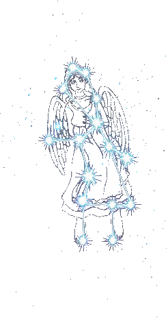

遇见十二星座
百变天蝎
天蝎座
精力旺盛、占有欲极强
，对于生活很有目标，不达到目的誓不罢休，
复仇心理重
，记仇会让自己不顾一切报复曾经伤害过你的人。天蝎男自我主义色彩很强烈，天蝎女的自我保护意识很强，不容易接近。
犹豫不决的交际者
天秤座常常追求平等、和谐，擅于察言观色，交际能力很强，因此真心朋友不少，因为你也足够真诚，但是最大的缺点就是面对选择总是犹豫不决。天秤男容易在乎自己而忽略别人，天秤女就喜欢被陪伴的感觉。
酷酷的小白
年轻的魔羯都是很单纯的，我想他们也不会知道自己将从天使变成恶魔，魔羯座的人天生善良，感情也都很脆弱，也许会因为一些很小的事情难过很长时间，所以他们通常在表面表现的酷酷的与事隔离的样子，其实他们只是不希望让别人看到他脆弱的一面，坚强，理智。
完美主义者
处女座虽然常常被黑，但他还是依然坚持追求自己的完美主义，因为在他看来，生活不能将就，追求的完美更不能将就，有目标才有进步，当然也需要鼓励。处女男的毅力很强，能坚持，处女女的求知欲很强。
dowebok
jQuery全屏滚动插件fullPage.js